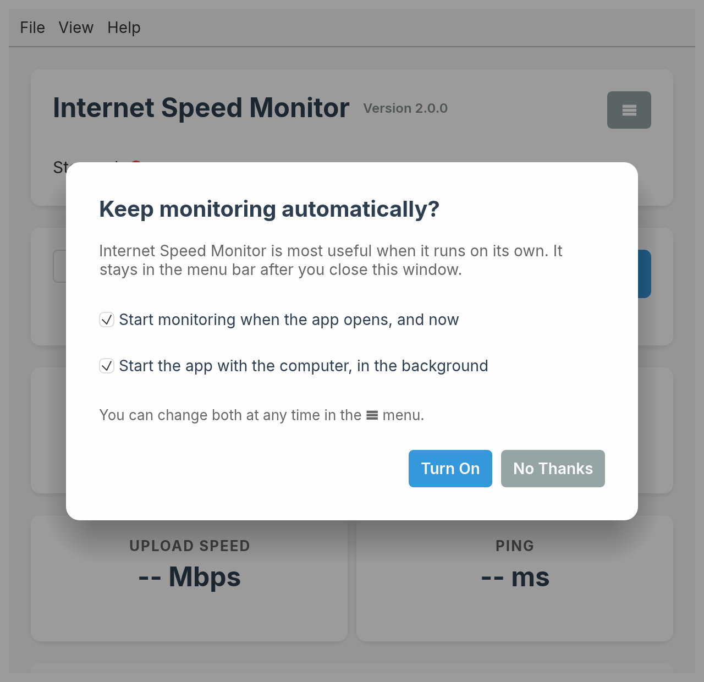

🚀 Quick Start Guide
Get up and running with Internet Speed Monitor in just a few minutes!
Step 1: Download the Application
Choose the appropriate version for your operating system:
- macOS: Download the
.dmgfile for your Mac (arm64for Apple Silicon,x64for Intel) from the releases page - Windows: Download the
Setup.exeinstaller - Linux: Download the
.debpackage (Debian, Ubuntu and derivatives) or the.tar.gzbinary
💡 Tip: Always download from the official GitHub releases page to ensure you get the latest, secure version.
Step 2: Install the Application
macOS Installation:
- Double-click the downloaded
.dmgfile - Drag the Internet Speed Monitor app to your Applications folder (choose Replace if you are upgrading)
- Launch from Applications or Spotlight search
Windows Installation:
- Double-click the downloaded
.exefile - Follow the installation wizard. If version 1.x is installed, it is removed for you
- Launch from Start Menu or Desktop shortcut
Linux Installation:
- Install the package:
sudo apt install ./internet-speed-monitor_*_amd64.deb(this also upgrades version 1.x) - Launch from your applications menu, or run
internet-speed-monitorfrom a terminal - Or extract the
.tar.gzand run theinternet-speed-monitorbinary directly
⬆️ Upgrading from 1.x: Your speed test history and settings carry over. A copy of the old history is kept as
speed_tests.backup-1.x.json in the app storage folder (Help → Open App Storage Folder). If you used the 1.x AppImage or portable .exe, delete the old file yourself.
⚠️ Security Note: On macOS, you may need to allow the app in System Preferences > Security & Privacy if you see a security warning.
Step 3: First Launch
When you first open Internet Speed Monitor, you'll see:
- Current Speed section: Shows real-time speed measurements
- Speed History chart: Visual representation of your connection over time
- Monitoring Controls: Set your testing preferences
The first time, the app also asks whether to keep monitoring automatically: start monitoring whenever the app opens, and start the app with your computer in the background. Both are off until you choose "Turn On", and you can change them later in the ☰ menu.

📊 Data Storage: All your speed test data is stored locally on your device. No data is sent to external servers.
Step 4: Configure Monitoring Settings
Set up automatic monitoring to track your internet performance:
Test Once Now:
- Click "Test Once Now" for an immediate speed test
- Get instant results without starting automatic monitoring
- Perfect for quick checks or troubleshooting
Configure Your Schedule:
- Simple Interval: Choose preset buttons (5m, 15m, 30m, 1h, 1d) for regular testing
- Cron Expression: Use advanced scheduling with Work hours preset or custom patterns
- Custom Schedules: Create precise timing with expressions like "every weekday at 9 AM"
- Get real-time validation and next execution preview
Start Monitoring:
- Click the "Start Monitoring" button
- The app will begin running speed tests automatically
- Watch the status indicator change to "Running" during tests and show countdown or next scheduled time
- See next execution time for your scheduled pattern
- Speed data will appear in real-time on the dashboard
🪟 Runs in the background: You can close the window. The app stays in the system tray (the menu bar on macOS) and keeps testing. Click the tray icon to open the window again, and choose Quit in its menu to stop the app.
⏰ Scheduling Tip: Start with preset intervals like 15m or 30m for regular monitoring, or use Work hours preset for business-focused monitoring that only tests during weekdays 9 AM-5 PM.
Step 5: Understanding Your Data
Real-time Information:
- Status Indicator: Shows current state (Stopped/Running/Sleeping)
- Test Running: Visual indicator when speed tests are actively running
- Next Test: Countdown timer to next scheduled test
- Current Stats: Latest download/upload speeds and ping
- Median Stats: Median values across all your historical data
Speed Metrics:
- Download Speed: How fast you can receive data (Mbps)
- Upload Speed: How fast you can send data (Mbps)
- Ping: Network latency/response time (milliseconds)
Reading the Chart:
- Blue line shows download speeds over time
- Green line shows upload speeds over time
- Hover over points to see exact values and timestamps
Step 6: Export Your Data
Save your speed test results for further analysis:
- Click the "Export CSV" button
- Choose a location to save the file
- Open in Excel, Google Sheets, or any spreadsheet application
The exported CSV contains:
- Timestamp of each test
- Download speed (Mbps)
- Upload speed (Mbps)
- Ping time (ms)
Next Steps
Now that you're up and running:
- 📖 Read the User Manual for detailed features
- ❓ Check the FAQ for common questions
- 🐛 Report issues on GitHub
- ⭐ Star the project if you find it useful!